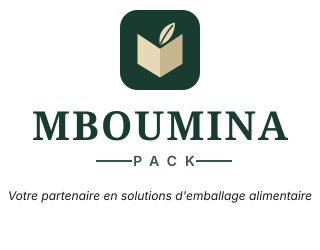

1. Le symbole
Le symbole représente une boîte ouverte vue d'angle. Sa silhouette dessine la lettre M de MBOUMINA. Une feuille sort de la boîte : elle évoque l'aliment protégé, le naturel et l'engagement vers des emballages plus responsables. Le symbole parle de distribution (la boîte livrée) sans représenter d'usine ni de machine.
2. Déclinaisons du logo

Logo principal
Version verticale avec signature. Couvertures, documents officiels, emballages.
logo-principal.svgLogo horizontal
En-tête du site, factures, devis, signatures email.
logo-horizontal.svgLogo compact
Espaces réduits : étiquettes, tampons, applications mobiles.
logo-compact.svgIcône de marque
Favicon, avatar réseaux sociaux, icône d'application.
icone.svgMonochrome noir
Impression une couleur, tampons, fax, gravure.
logo-monochrome-noir.svgMonochrome blanc
Sur fonds foncés et photos.
logo-monochrome-blanc.svg3. Couleurs officielles
#183D30 · RGB 24 61 48
Couleur principale : fonds, titres, boutons.
#315B45 · RGB 49 91 69
Survols, accents, liens.
#E7D9B8 · RGB 231 217 184
Fonds de section, rappel carton/kraft.
#FFFFFF
Fonds de contenu, respiration.
#171A18 · RGB 23 26 24
Texte courant, pied de page.
#C8B68E
Uniquement pour la face ombrée du symbole.
Contrastes vérifiés (WCAG) : texte blanc sur vert profond ≈ 11:1 (AAA) ; noir sur beige ≈ 13:1 (AAA) ; vert profond sur beige ≈ 8:1 (AAA). Ne pas mettre de texte beige sur blanc.
4. Typographies officielles
| Usage | Police | Exemple |
|---|---|---|
| Titres, logo | Fraunces (gras 700) — licence libre OFL | Emballages alimentaires |
| Texte, interfaces, documents | Inter (400, 600, 700) — licence libre OFL | Votre partenaire en solutions d'emballage alimentaire. |
| Secours | Georgia / Segoe UI / Arial | Quand les polices ne sont pas installées. |
5. Règles d'utilisation
À faire
- Laisser autour du logo une zone de protection égale à la hauteur de la feuille.
- Taille minimale : icône 24 px à l'écran / 8 mm imprimée ; logo horizontal 120 px / 30 mm.
- Utiliser la version blanche sur fonds verts ou photos sombres.
- Utiliser la version noire pour l'impression une couleur.
À ne pas faire
- Déformer, incliner ou étirer le logo.
- Changer les couleurs hors palette.
- Ajouter des ombres, contours ou dégradés.
- Placer le logo sur un fond chargé sans contraste.
- Associer le logo à des logos de certifications non obtenues.
6. Ton et messages
Signature : « Votre partenaire en solutions d'emballage alimentaire. »
Ton professionnel, clair et chaleureux. On parle de distribution, de sélection, de partenaires et d'accompagnement. On n'affirme jamais de capacité de production propre, de certification, de stock ou de délai non vérifiés.
7. Photographie
- Photos réelles des produits distribués, sur fond neutre beige ou blanc.
- Pas de photos d'usines ou d'entrepôts présentées comme appartenant à MBOUMINA PACK.
- Les images d'illustration (banques d'images) sont signalées comme telles si elles peuvent prêter à confusion.
8. Fichiers et production
Les logos sont livrés en SVG. Avant impression professionnelle, faire vectoriser les textes (conversion en contours) par l'imprimeur ou dans un logiciel vectoriel, pour ne pas dépendre des polices installées.